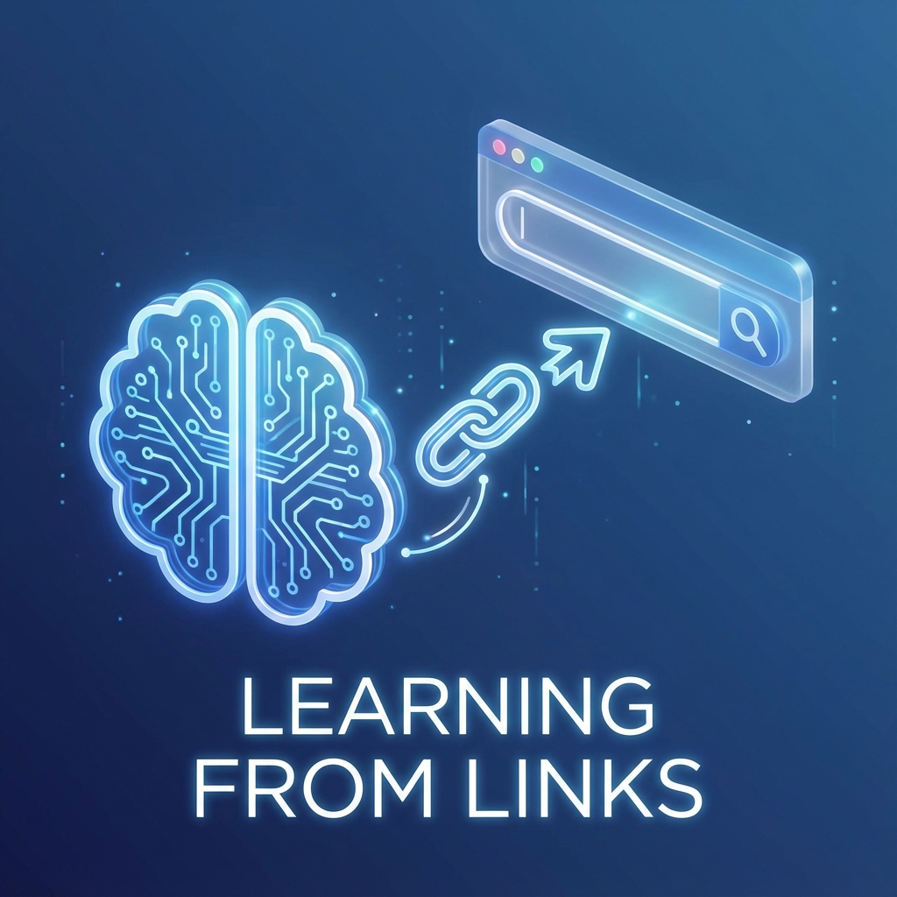

Gemini má jednu konkrétní funkci (a speciálně v jeho verzi pro učení), která je absolutním „game-changerem“ pro studium. Jde o práci s odkazy (URL).
Mnoho studentů používá Gemini jen jako „chytřejší vyhledávač“. Píšete mu otázky a čekáte odpověď. To je fajn, ale skutečná magie nastává, když Gemini řeknete: „Tady je tento konkrétní článek/video, nastuduj ho a pak mě z něj vyzkoušej.“
Pojďme se podívat, jak tuto funkci v nástrojích „Učení s vedením“ (nebo v klasickém Gemini) využít na maximum.
🧠 Proč používat odkazy, a ne jen obecné otázky?
Když se zeptáte Gemini „Vysvětli mi fotosyntézu“, vytáhne informace ze své obecné tréninkové databáze. To je obvykle správně, ale může to být příliš obecné, nebo naopak příliš složité, a nemusí to odpovídat tomu, co po vás chce váš učitel.
Když vložíte odkaz na konkrétní článek nebo YouTube video:
- Ukotvíte AI v realitě: Gemini pracuje přímo s vaším studijním materiálem (skripta, článek na Wiki, výukové video).
- Omezíte halucinace: AI si méně vymýšlí, protože má „před sebou“ text.
- Šetříte čas: Nemusíte číst 20 stran textu, abyste zjistili, zda je relevantní.
🛠️ Jak to funguje prakticky (Krok za krokem)
Je to jednodušší, než se zdá:
- Zkopírujte URL adresu (webové stránky, PDF online, YouTube videa).
- Vložte ji do chatovacího okna Gemini.
- Ihned za odkaz připište instrukci (prompt). Nenechávejte odkaz jen tak viset, řekněte AI, co s ním má dělat.
📚 3 Praktické scénáře pro studenty
Zde jsou mé ověřené „recepty“, jak s odkazy pracovat. Můžete je rovnou zkopírovat a vyzkoušet.
Scénář 1: Rychlé pochopení složitého videa (YouTube)
Máte za úkol podívat se na 40minutovou přednášku na YouTube, ale ztrácíte se v ní?
Výsledek: Dostanete strukturovaný výpis. Pokud něčemu nerozumíte, můžete se doptat: „Co přesně myslel řečník v bodě 3?“
Scénář 2: Příprava na test z dlouhého článku (Historie/ZSV)
Učitel vám poslal odkaz na dlouhý článek o Velké francouzské revoluci a zítra z něj píšete test.
Výsledek: Máte okamžitý studijní přehled a cvičný test na míru.
Scénář 3: Přeměna pasivního čtení na aktivní učení (Jazyky/Biologie)
Máte online učebnici nebo PDF a potřebujete si látku zapamatovat.
Výsledek: Toto je metoda Sokratovského dotazování. Místo abyste text jen tupě četli, musíte nad ním přemýšlet.
⚠️ Na co si dát pozor (Rady zkušeného učitele)
- Paywally: Pokud je článek zamčený, Gemini se na něj nedostane. Zkopírujte text (CTRL+C) a vložte ho přímo (CTRL+V).
- Halucinace u videí: Gemini čte primárně titulky. Pokud jsou špatné, analýza může být nepřesná.
- Ověřování: Vždy si namátkově zkontrolujte, zda to, co Gemini tvrdí, v textu skutečně je. Důvěřuj, ale prověřuj!
🚀 Závěr
Používání odkazů v Gemini mění roli studenta. Už nejste jen „sběrač informací“, stáváte se „editorem svého vzdělání“. Nástroj udělá hrubou práci (čtení, shrnování), vy děláte tu důležitou (chápání souvislostí).
Chcete si to vyzkoušet hned teď? Najděte si na internetu článek k tématu, které se zrovna učíte ve škole, a zkuste to!